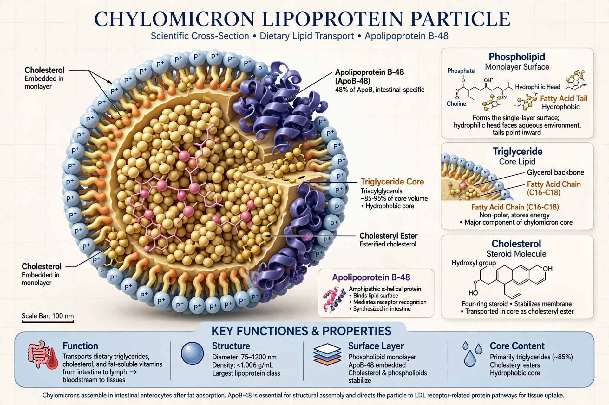

Chylomicrons (from the Greek chylo, juice/milky fluid, and micron, small particle), also known as ultra low-density lipoproteins (ULDL), are lipoprotein particles that consist of triglycerides (85–92%), phospholipids (6–12%), cholesterol (1–3%) and proteins (1–2%). They transport dietary lipids, absorbed in the small intestine, to adipose, skeletal and cardiac muscle tissue, and ultimately the liver. Chylomicrons are the largest lipoproteins, ranging roughly 75–1,200 nm in diameter, and the least dense.
| Chylomicron | |
|---|---|
 | |
| Diameter | 75–1,200 nm |
| Main apolipoprotein | ApoB-48 (structural); acquires ApoC-II and ApoE |
| Site of formation | Enterocytes of the small intestine |
After a fatty meal, enterocytes re-esterify absorbed fatty acids and monoacylglycerols into triglycerides and package them with cholesterol and fat-soluble vitamins around a molecule of apolipoprotein B-48 (a truncated intestinal form of ApoB). The nascent chylomicrons are exocytosed into the lacteals and travel via the lymphatic system and thoracic duct into the systemic blood — bypassing first-pass hepatic metabolism, which is why dietary fat makes plasma appear milky (lipemic) after meals.
In blood, chylomicrons acquire apolipoproteins C-II and E from HDL. ApoC-II activates lipoprotein lipase on capillary endothelium in muscle and adipose tissue, which hydrolyses core triglycerides and releases free fatty acids for energy or storage. The shrinking particle, now a chylomicron remnant, returns ApoC-II and is cleared by the liver via ApoE-binding receptors (LDL receptor and LRP1). Fasting plasma normally contains no chylomicrons.
Deficiency of lipoprotein lipase or ApoC-II causes familial chylomicronemia syndrome, with fasting chylomicrons, eruptive xanthomas, and recurrent pancreatitis. Retained chylomicrons in the intestine occur in abetalipoproteinemia and chylomicron retention disease due to defects in ApoB/MTP or SAR1B.
From Wikipedia, the free encyclopedia (recreated from memory).